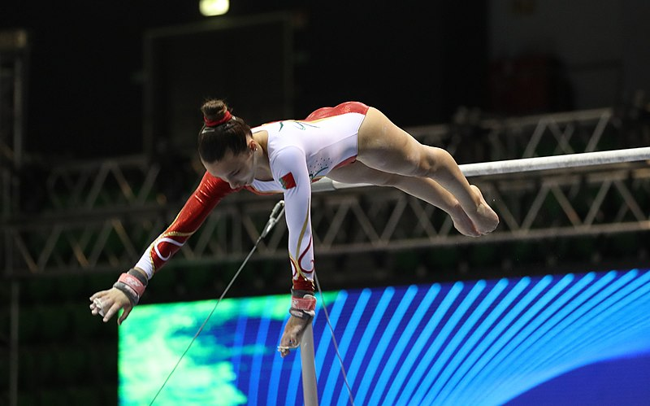

Greco-Roman Wrestling
Greco-Roman Wrestling is a combat sport performed on a circular mat. Participants are required to use their upper bodies to execute a variety of different moves to pin their opponent.
Fencing
Fencing is a sport that combines the physical and mental strengths of each participant. Not only do strength, speed, and coordination matter in a fencing bout, but so do the planning and quick-thinking of the fencer.
Gymnastics
Gymnastics is a sport that includes physical exercises requiring balance, strength, flexibility, agility, coordination, and endurance.